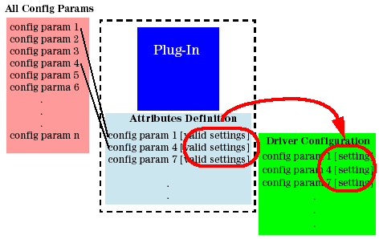

Changing Parameter Settings
Before you change parameter settings in a configuration file, you should always check the relevant attributes definition file for the valid settings of that parameter.

The default attributes definition file (shattrib for the handler driver, or spattrib - for the prober driver) that is provided with a plug-in is located in the respective config sub-directory of the plug-in directory:
Examples:
/opt/hp93000/soc/PH_libs/GenericHandler/Synax-GPIO/config/shattrib
/opt/hp93000/soc/PH_libs/GenericProber/TEL/config/spattrib
A user-modified attributes definition file must be located in the same directory as the driver configuration file. See Handling an Attributes Definition File for more information.